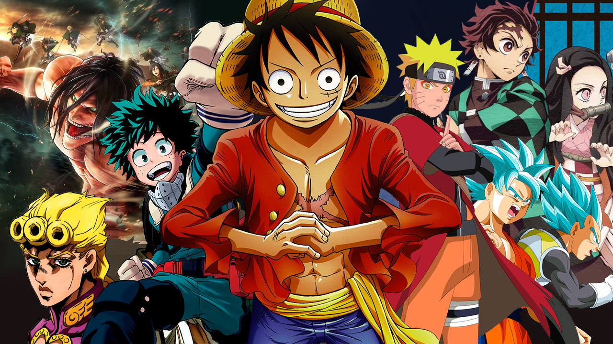

El Reino de Clays se enfrenta a un conflicto que dará forma al continente durante siglos... ¡pero Noor no tiene ni idea de nada de eso! Acaba de llegar a la capital real después de más de una década de riguroso y aislado entrenamiento en su hogar en la montaña, y está decidido a cumplir su sueño de la infancia
Leer masDespués de recuperar la conciencia, Satoru descubre que se ha reencarnado como un Slime en un mundo desconocido. Al mismo tiempo, también adquiere nuevas habilidades, particularmente la habilidad llamada "Depredador", que le permite devorar cualquier cosa e imitar su apariencia y habilidades.
Leer masAlisa Mikhailovna Kujo, que asiste a una escuela privada, Seirei Gakuen, es una chica de secundaria con cabello plateado que se ve tan hermosa que cualquiera puede darse la vuelta si ella camina. El personaje principal, Masachika Kuze, que se sienta junto a Alisa, es un estudiante desmotivado
Leer mas